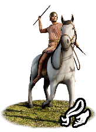
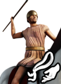
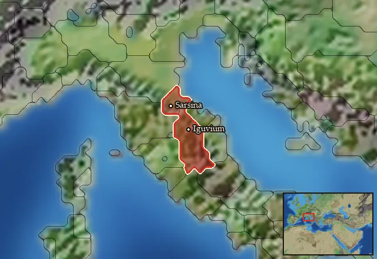

Umbrian Light Cavalry


Class: missile · Category: cavalry · Men per unit: 30
Description
The Umbrian Light Cavalry is composed of the younger sons of the Umbrian nobles, recruited across the alluvial plains of the Tiber. They serve as the eyes and ears of their armies, and are extremely useful for scouting purposes. Lacking body armour and shields, these horsemen rely entirely upon their agility, skill, and the speed of their mounts. They enter combat wearing short, dyed woollen tunics fastened with bronze belts. Some of these riders have been able to afford basic Montefortino or Chalcidian helmets topped with feathers. They are armed with light thrusting spears alongside a supply of throwing javelins. These light horsemen should not be used to fight other units in close combat, as their light equipment makes them best suited as a fast-moving scouting force. They excel at probing enemy formations, harassing their unprotected flanks with javelins, and riding down fleeing foes after their main battle line has broken.
Historical background
The country of the Umbri is vast and fertile, watered by great streams. Rich in woods and forests, it offers the possibility of developing different productive activities, both in terms of agriculture and livestock farming, and of different types of settlements and exploitation of the soil (Manconi, 'The Umbri', in: Farney and Bradley (eds.), The Peoples of Ancient Italy (2017), pp. 613–614, 630). In northern Umbria along the Sapis river (modern Savio), the territory of the Sarsinates was similarly celebrated by ancient authors, such as Silius Italicus, for its rich flocks and pastoral wealth (Sil. Pun. 8.461).
In Central Italic warfare, light horsemen performed an important skirmishing role (Burns, The Cultural and Military Significance (2005), pp. 187–189; Torelli, s.v. 'Archaic Rome between Latium and Etruria', in: The Cambridge Ancient History VII.2 (2006), pp. 35–37). Javelin-armed cavalrymen appear frequently in Central and South Italic iconography, reflecting a style of combat dedicated to reconnaissance and harassment from a distance (Burns (2005), pp. 187–189).
During the 3rd century BC, Rome made extensive use of allied Italian cavalry levies (socii equites) to complement its legions, as told by the Greek historian Polybius, who provided an official breakdown of the manpower available to Rome and its allies just before the Battle of Telamon (225 BC) (Polyb. 2.24.7; Kent, 'The Italians in Roman Armies', in: Farney and Bradley (eds.), The Peoples of Ancient Italy (2017), pp. 254–268). Following the conquest of the Sarsinates in 266 BC by consuls D. Junius Pera and Num. Fabius Pictor (Fasti Triumphales Capitolini, II, XX; Liv. Per. 15), the Roman census of 225 BC recorded 20,000 combined infantry and cavalry available from the Umbrians and Sarsinates (Polyb. 2.24.7; Manconi (2017), p. 629).
Throughout the Hannibalic War, Umbrian light horsemen certainly joined Roman movements along the Via Flaminia and participated in the emergency levies that supported Roman field armies across the province of Apulia (Liv. 22.9, 28.45; Manconi (2017), p. 629). Thus, under continuous military service as allies in Roman armies, these young nobles incorporated Roman military norms and practices. According to Appian, during the Socii War, sectors of Etruscans and Umbrians, who had up to that point refused to take action against Rome, started to make preparations for a revolt, either because they heard about the early success of the Italian coalition or possibly due to their frustration at Rome’s unwillingness to reward those who had stayed loyal. Fearing the consequences of the opening of a new front in the war, the Roman senate responded by dispatching a contingent of freedmen to the Tyrrhenian (Etruscan) coast, and by drawing up a bill that bestowed Roman citizenship upon the Italians that had maintained their loyalty. Appian remarks that this met the wishes of the Allies, and that it sufficed to solve the crisis in Etruria. However, it is also possible that the Umbrians joined the revolt, but were quickly defeated and gave in. Livy tells us that the “deputy Aulus Plotius defeated the Umbrians and praetor Lucius Porcius the Etruscans. Both nations had revolted”. Commenting at a much later time, Lucius Annaeus Florus (circa 74 – 130 AD), a Roman historian follows up on Livy, writing as part of his “Epitome of Roman History” on the Social War that: “The flower of our bravest and most trusted allies were led, each under their several standards, by the most eminent leaders from the country towns, Poppaedius commanding the Marsians and Paeligni, Afranius the Latins, Plotius the Umbrians, Egnatius the Etruscans, and Telesinus the Samnites and Lucanians” (Florus, Book II, VI; Livy, Periochae, 74.5).
Regardless of what actually transpired, the Umbrians received full Roman citizenship with the passing of the Lex Iulia in 90 BC and the Lex Plautia Papiria in 89 BC, which expanded Roman citizenship to Italian allied communities and individuals who had not joined the Socii’s war against Rome (Santangelo, 'The Social War', in: Farney and Bradley (eds.) (2017), pp. 241–243; Manconi (2017), p. 630).
Stats
| Rank in roster | ||
|---|---|---|
| Men per unit | 30 | █········· 8% |
| Attack | 10 | ██········ 20% |
| Charge bonus | 19 | ███████··· 68% |
| Defence | 15 | █········· 8% |
| · armour | 2 | █········· 13% |
| · defence skill | 13 | █········· 14% |
| · shield | 0 | █········· 0% |
| Morale | 8 | ██········ 19% |
| Discipline | Normal | |
| Training | Highly trained | |
| Recruitment cost | 1,460 dn | █········· 14% |
| Upkeep per turn | 590 dn | ████······ 37% |
| Turns to recruit | 2 |
Weapons
| Primary | Secondary | Primary | Secondary | Primary | Secondary | Primary | Secondary | ||||
|---|---|---|---|---|---|---|---|---|---|---|---|
| Attack | 10 | 6 | Type | thrown · archery | melee · blade | Projectile | javelin | — | Ammunition | 7 | — |
| Charge bonus | 19 | 19 | Damage | piercing | piercing | Range | 60 | — | Properties | Thrown | — |
Defence
| Primary | Secondary | Primary | Secondary | Primary | Secondary | Primary | Secondary | ||||
|---|---|---|---|---|---|---|---|---|---|---|---|
| Total | 15 | — | Armour | 2 | — | Defence skill | 13 | — | Shield | 0 | — |
Condition and terrain
| Hit points | 1 | Ground: scrub / sand / forest / snow | -1 / 0 / -7 / 0 | Charge distance | 40 | Formations | Square |
| Mount | light horse |
Technical stats
| Time between blows (primary / secondary) | 2.5 s / 2.5 s | Extra fatigue in hot climates | 0 | Spacing between men: close / loose | 2 × 4.8 m / 3.6 × 6.72 m | Default ranks | 5 |
In battle: Can form Cantabrian circle · Very good stamina
Who can recruit it
A core roster unit for one faction, which can raise it anywhere it holds the right building:
Any faction holding one of the provinces below can field it.
Exactly what a settlement must have, route by route (4)
| For | Building | Also requires | For | Building | Also requires | For | Building | Also requires | For | Building | Also requires |
|---|---|---|---|---|---|---|---|---|---|---|---|
| Sarsinates | Indirect Rule | Garrison Building or Tier 1 Military Industrial Complex · Tier 1 Colony | Sarsinates | Direct Rule | Garrison Building or Tier 1 Military Industrial Complex · Tier 1 Colony | Sarsinates | Homeland | Garrison Building or Tier 1 Military Industrial Complex | Every faction except Sarsinates (area-of-recruitment unit) | Any settlement | Garrison Building or Tier 1 Military Industrial Complex · Umbrian area of recruitment · Any Government (Dependency, Indirect Rule or Direct Rule) · Tier 2 Colony not built |
Areas of recruitment

| Zone | Provinces | ||||||
|---|---|---|---|---|---|---|---|
| Umbrian | 2 |